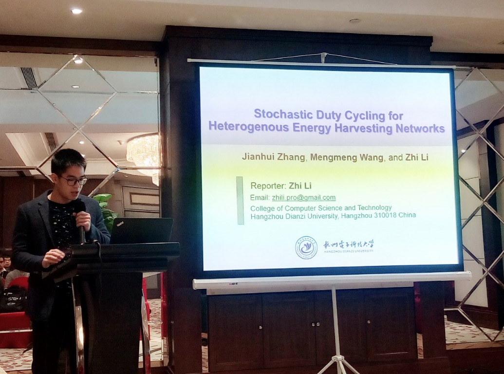
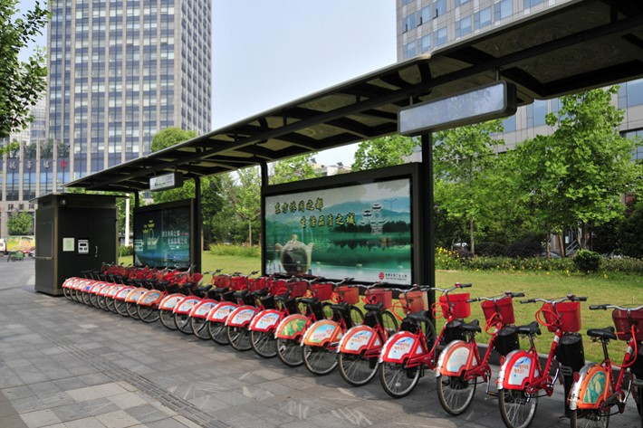
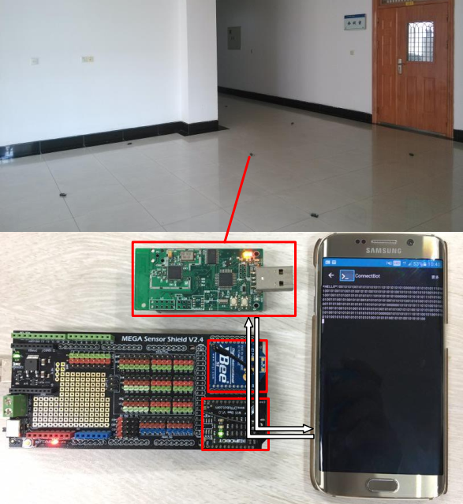

I am looking for a Ph.D. position in Computer Science! Some materials can be found here, including TOEFL, GRE scores and transcripts.
I am going to attend the IEEE MASS 2017 to be held in Orlando, FL, USA on Oct 22 - 25 2017.
Zhi Li received his M.E. degree in Mar 2017 as an outstanding graduate student in Zhejiang province under the supervision of Prof. Jianhui Zhang, and B.E. degree in Jun 2014 both from the School of Computer Science and Technology at Hangzhou Dianzi University in China. He has done some active research in Mobile and Sensor Networks, including the Crowdsourcing based Bike Sharing System and IoT based Fire Escaping System. Several of his papers in the related area have been accepted by/published in some top conferences/journals, e.g. IEEE SECON, IEEE TII. He has served as a peer reviewer of IEEE TII and The Computer Journal. He is now looking for a Ph.D. position to continue his research.
Mobile and Sensor Networks, Mobile Crowdsourcing, Machine Learning, Game Theory
Conference papers:
Journal papers:
Stochastic Duty Cycling for Heterogenous Energy Harvesting Networks
Large-Scale Trip Planning for Bike-Sharing System
Crowdsourcing Based Bike-Sharing System, 2016 - present
Bike-Sharing System (BSS) is a convenient service deployed in many big cities to alleviate the last-mile problem. The explosion of users in BSS causes unbalance of resources in the system and inconvenience of bike utilization for user. Now, it is quite often that some users are not able to borrow or return bikes from or to stations because of the serious unbalance of resources in the BSS.
To tackle the problem, we built a mobile crowdsourcing platform which can collect real-time bike resources information at bike stations by crowdsourcing so as to provide users more accurate information of bike stations nearby. It also provides users the full bike utilization guidance, which composes of three segments: from user's start point to a start station, from the start station to a target station and from the target station to user’s terminal point.
Related paper accepted by IEEE MASS.
Internet of Things Based Fire Escaping System, 2014 - 2016
Fire hazard puts health of millions at risk and results in billions of loss all around the world every year. When fire hazard occurs in a building, especially the building with complex structure, people in the building are unable to find the feasible or better escaping route without guidance so that the precious surviving time is wasted, which causes unnecessary injury or death. Therefore, a fire escaping system that provides real time fire and routing information during fire escaping can help people escape as fast and safe as possible.
In this work, we design a fire spread prediction based fire escaping route planning approach for people. We design a smartphone based neighbor discovery method so that the crowd information could be considered in fire escaping route planning. We also build a network of TelosB nodes, Android smartphones and Arduino suite (Arduino Mega 2560, XBee and Wifi Bee).
Related paper published in PPNA.
Basketball, Badminton, Cycling, Chinese bamboo flute, Guitar